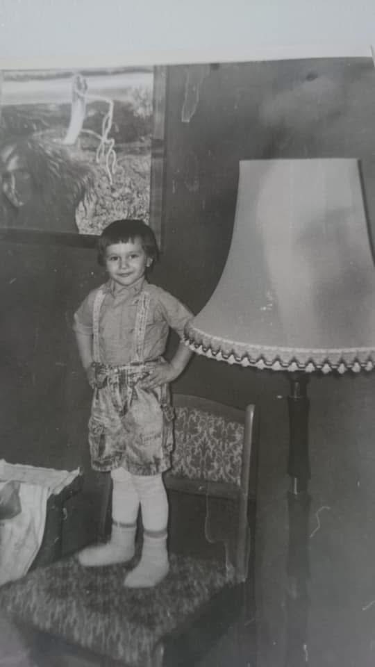
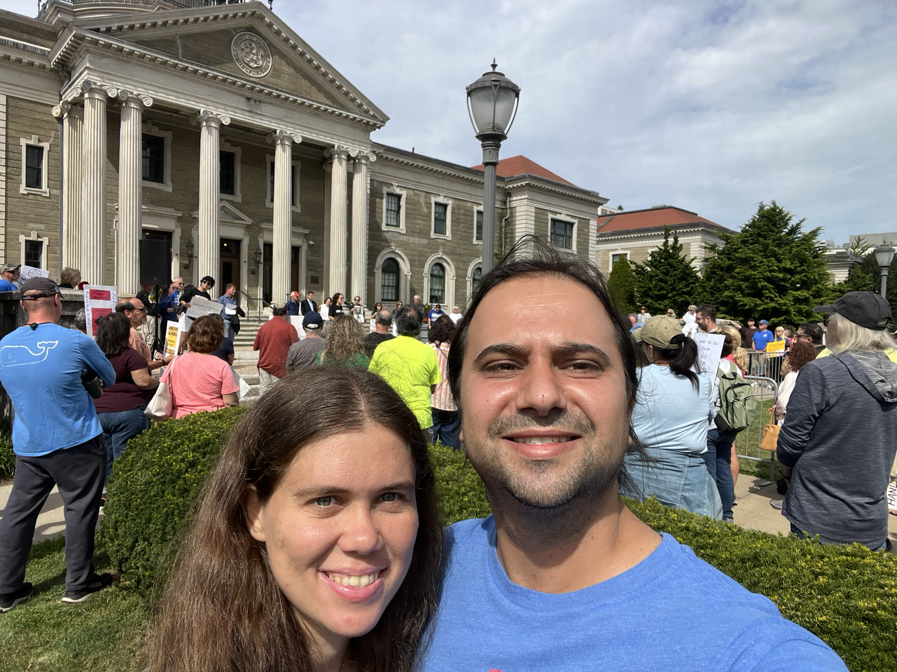
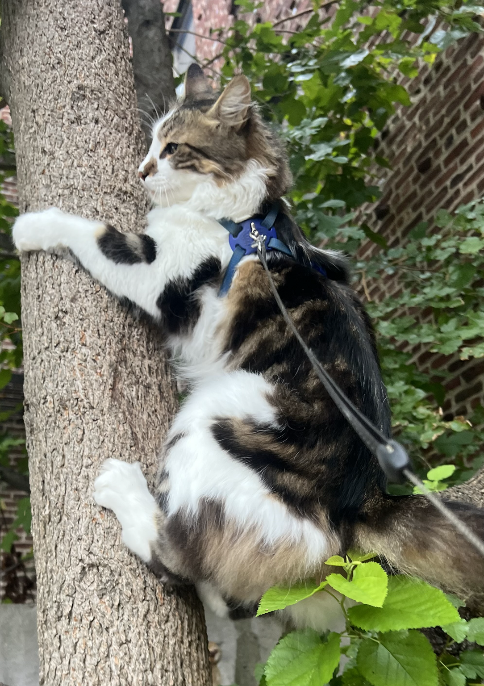
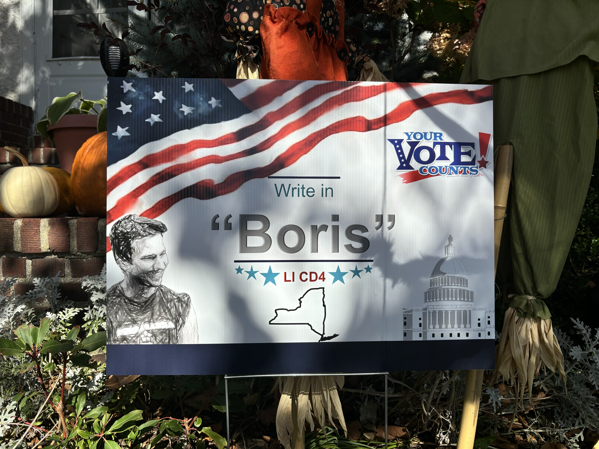
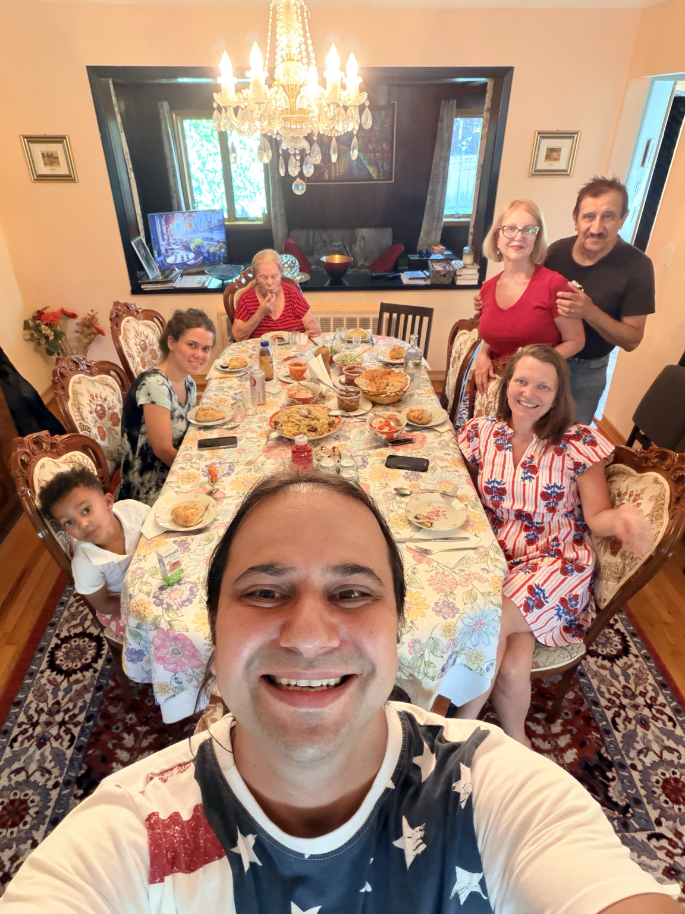
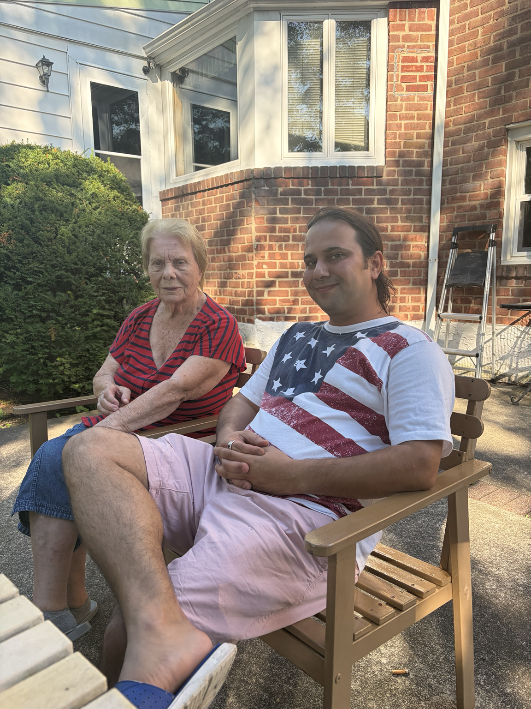

BIOGRAPHY
About Boris
Born in the final years of the Soviet Union and raised between immigrant Queens and suburban Long Island, Boris Yagudayev's life has crossed different cultures, communities and political experiences.
This page combines first-person biography with independently verifiable public background. Personal recollections are presented as Boris's own account.

My perspective was shaped by three very different worlds: the place my family left, the urban immigrant community where we first made a home in America, and the Long Island suburbs where I grew up.
1989 — EARLY 2000s
From Tashkent to New York
I was born in Tashkent, Uzbekistan, in 1989, during the final years of the Soviet Union. My mother's family is ethnically Russian and Ukrainian, while my father's family is Bukharian Jewish. On my mother's side, Christian traditions remained part of the family's cultural background, but religion was not the primary framework through which they lived or understood the world. They were educated and raised within Soviet society, where communism and an atheistic worldview played a much larger role in family life and outlook.
My maternal grandfather graduated from a Marxist-Leninist graduate school, and his education and beliefs influenced my mother as well. My mother, Irina Yagudayeva, describes her parents' outlook this way:
“My parents genuinely believed in the ideals of Marxism-Leninism and tried to live by them throughout their lives. They were honest, hardworking people who valued equality, fairness, and helping others. They devoted themselves to their work and to the people around them, believing that their efforts should serve a greater good rather than simply bring personal wealth or comfort. Whatever one may think of the ideology itself, these were the values they sincerely embraced and passed on to me: to work hard, live honestly, treat people equally, and contribute something meaningful to others.”
That combination of Russian and Ukrainian heritage, inherited Christian traditions, Soviet atheism and communist ideals was an important part of the environment from which my family came.
My father's family came from the Bukharian Jewish community, a Jewish population that had lived for generations in the predominantly Muslim societies of Central Asia. In my family's account, my paternal great-grandfather was arrested and jailed by Soviet authorities for engaging in private-market activity that was illegal under Soviet restrictions on capitalism. A later generation followed a very different path: my paternal grandfather became a mathematics professor and university mathematics director in Uzbekistan and wrote books on mathematical theory.
The histories on both sides of my family are stories of struggle, adaptation, survival and perseverance in the face of very different forces. One side carried Russian and Ukrainian ethnic roots through the ideological world of Soviet communism; the other carried an old Jewish identity through centuries in Central Asia and then through Soviet rule. The fact that my parents came together across those different backgrounds has always represented something hopeful to me. Their relationship taught me early that people shaped by very different histories and traditions can still find common ground, and that idea has become an important part of my personality and outlook.
After the Soviet Union dissolved and Uzbekistan became independent, my family experienced the uncertainty of a rapidly changing society. Amid concerns about political and religious instability, we made the decision to leave. In the early 1990s, my family came to the United States as political and religious refugees and settled in Rego Park, Queens.
My parents had trained as computer programmers. Their skills translated into a growing American technology economy during the 1990s and helped our family establish a new life.
Around 2000, we moved from Queens to Oceanside on Long Island. I arrived in fifth grade and remained there through high school. Moving from the former Soviet Union to an immigrant neighborhood in Queens and then to suburban Long Island gave me an early view of how differently people can experience the same society.

OCEANSIDE & BOSTON
Education and political curiosity
My interest in politics began taking shape during high school. A Presidential Classroom program in Washington, D.C. exposed me to government and public affairs, while friends, music and the debates surrounding the Iraq War introduced me to political ideas outside the classroom.
My own experiences with marijuana enforcement among friends and peers also led me to question drug policy and, eventually, to support legalization and reconsider the effects of criminal enforcement.
I attended Boston University, where I studied International Relations and International Economics. The university environment exposed me to a wide range of political and intellectual perspectives. I attended lectures by speakers including Howard Zinn, Noam Chomsky, Elie Wiesel and Martin Luther King III, among others.
Those years expanded the range of social, economic and foreign-policy questions I was interested in, without giving me a single ideological path to follow.
EARLY POLITICAL WORK
Inside Long Island politics
After college, I created a grassroots Democratic page for my hometown and began meeting local activists and political organizers. I helped establish a local club and volunteered during President Barack Obama's 2012 reelection campaign, including phone banking, canvassing and rallies.
That involvement eventually led to a political appointment at the local Board of Elections. I worked elections, volunteered on campaigns and, in the aftermath of Hurricane Sandy, supervised a consolidated voting location in Long Beach.
Working inside the system also changed my view of it. I became increasingly uncomfortable with patronage and the role of political insiders across party lines.
One campaign experience became a turning point. In my account, while working as a tracker during a county executive campaign, I was sent to monitor an opponent's private political event. After security discovered me, the confrontation that followed made me reconsider the kind of political work I wanted to do. Not long afterward, I left my patronage position and stepped away from local politics.
The tracker incident above is a personal recollection and is presented as such rather than as an independently verified account.
A DIFFERENT DIRECTION
Service, work and perspective
After leaving political work, I moved upstate for a period and spent several years reassessing what I wanted to do. I began a career serving people with intellectual and developmental disabilities, work that I continue today.
That work became an important part of my life independent of politics. Earlier in my twenties, much of my experience had consisted of education, campaigns and political appointments. Working directly with people and families gave me a different kind of responsibility and experience.
Today, I supervise vocational programming for neurodivergent students. This website intentionally does not identify my current employer.
RETURN TO PUBLIC LIFE
Cannabis advocacy and an online community
After returning to Long Island, I gradually became politically active again. As cannabis legalization became a major issue in New York, I created a Facebook group advocating legalization. The community eventually grew to more than 4,000 members.
After New York legalized adult-use cannabis, I renamed the group Boris for Congress on LI's CD4. What began around a single policy issue became the foundation for a broader online political project.
Over the years since, I have used social media to publish policy discussions, politically themed music videos and material from protests and rallies I attended. Topics have included health care, economics, foreign policy, campaign and democratic reform, and political ideology.
LIFE ON LONG ISLAND
Family, community and public life
Selected photographs from Boris's personal archive.





THE THROUGH LINE
Different worlds, one perspective
My family's experience in the Soviet Union, our immigration to the United States, growing up in both urban and suburban New York, my time inside local politics and my work outside of it all inform the way I approach the questions our society is debating today.